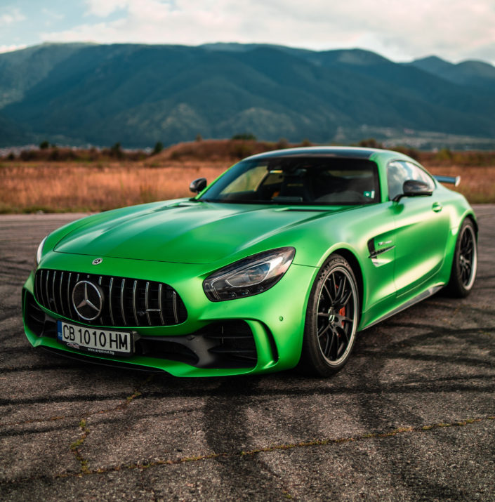
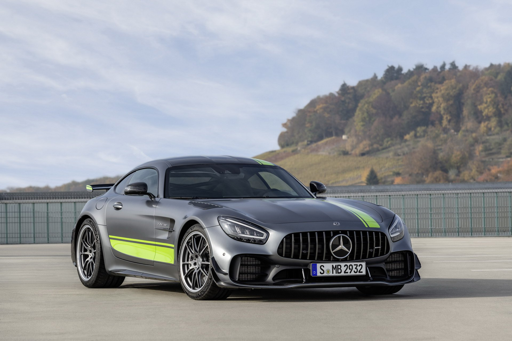
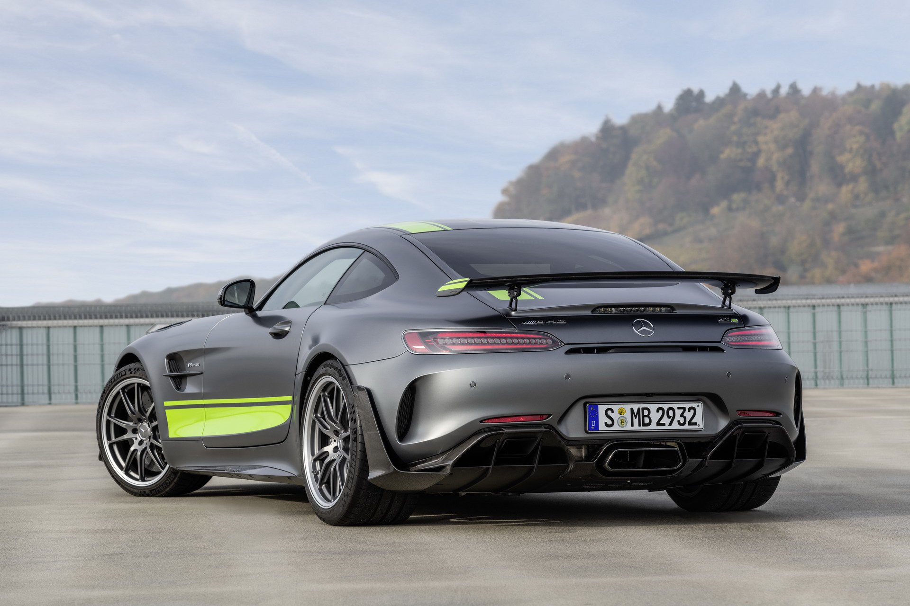

<div class="container-fluid">
    <div class="row">
        <div class="col">
            <h2> Mercedes GT-R </h2>
            

            <p> Двигателят M178 в този вариант е настроен на мощност от 430 kW (585 к.с.; 577 к.с.) при 6250 об/мин и 700 N⋅m (516 lb⋅ft) въртящ момент при 5500 об/мин. GT R ​​ускорява от 0 до 100 км/ч (62 мили/ч) за 3,6 секунди и има заявена максимална скорост от 319 км/ч (198 мили/ч). </p>

            
            
        </div>	
    </div>
</div>